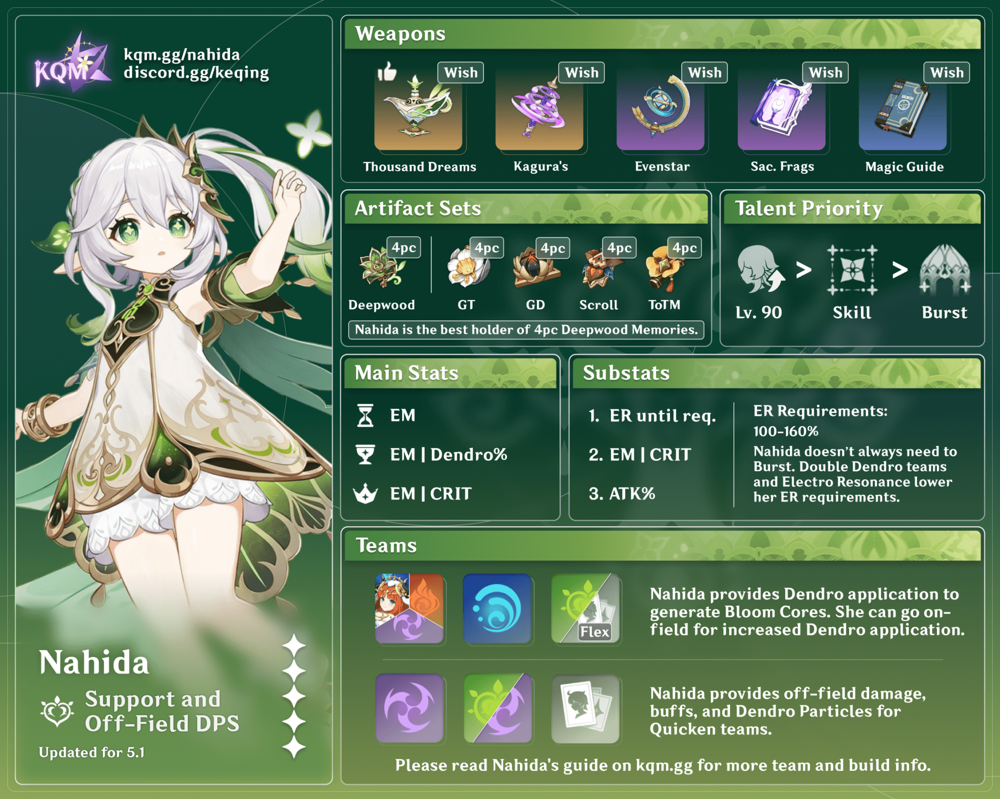

Nahida is a wise and compassionate character from Genshin Impact. As
the Dendro Archon, she is deeply attuned to the natural world and its
harmony. Her abilities as a Dendro character make her an exceptional
support unit who enhances her allies' potential in battle.
Nahida is revered for her intelligence, empathy, and connection to
Sumeru's wisdom. As a wielder of the Dendro element and a catalyst,
she combines her profound understanding of nature with her supportive
skills to empower her team and protect the balance of the world.

Character Demo - "Nahida: Boundless Bliss" | Genshin Impact